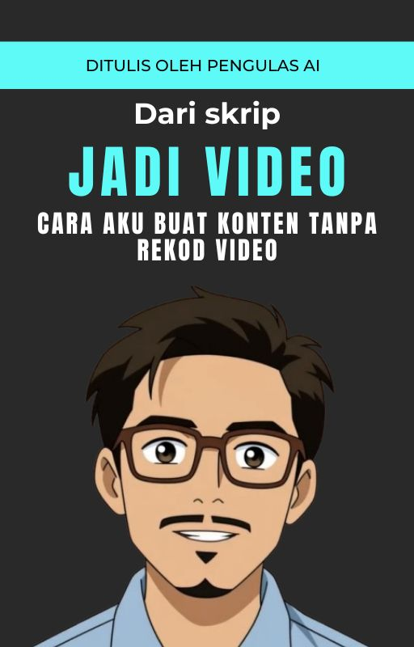

Percuma
Fail JSON ini adalah blueprint AI Assistant untuk sistem tempahan minuman seperti chatbot café. Sesuai digunakan untuk membuat voice AI agent bagi service F&B.
⬇️ Muat Turun Sekarang
RM39.00
Ebook ini adalah panduan praktikal dan lengkap untuk anda yang nak hasilkan video TikTok AI tanpa perlu tunjuk muka, suara sendiri, atau skill editing yang tinggi. Dalam buku ini, anda akan belajar cara buat avatar AI bercakap, tulis skrip guna ChatGPT, hasilkan suara robotik guna Clipchamp, dan edit semua itu dalam CapCut dengan langkah yang mudah diikuti.
📩 Dapatkan Sekarang